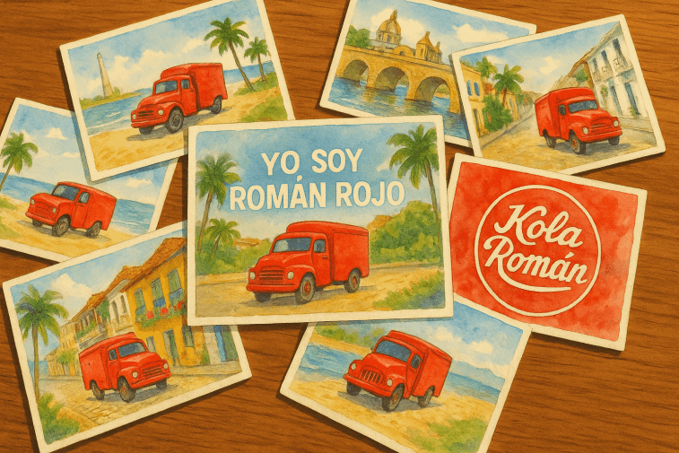
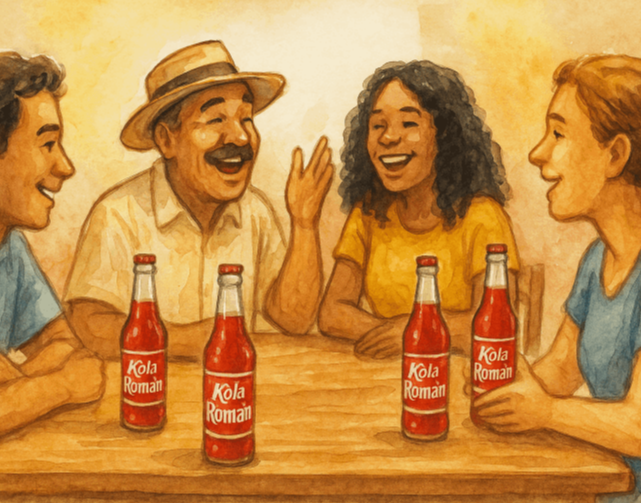

Secciones

Roman Rojo
Román Rojo es un repartidor legendario nacido del Caribe colombiano. Recorre Cartagena, Barranquilla y los pueblos del río con su camión rojo, llevando más que refrescos: lleva tradición y memoria.

Postales de
Ruta
Colecciona postales ilustradas de cada tramo del viaje de Román Rojo. Cada una trae un dato sabroso del lugar, un guiño musical y un pequeño reto para desbloquear la siguiente.

Memorias de la Gente
Fragmentos reales de personas que respondieron nuestra encuesta: sabores que recuerdan a casa, historias de familia y fiestas que se quedaron en el corazón. Léelos, déjate tocar y deja el tuyo.